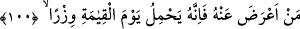
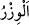
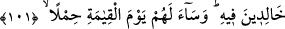

mûcizesi olsun ve ümmetinden basîret üzere olanlar ondan ibret alsın.
“Şüphesiz ki, tarafımızdan sana bir zikir” bu kıssaları ve haberleri de içinde
bulunduran, üzerinde düşünmeye ve ibret almaya lâyık şerefli bir kitap“verdik.”
Tefsîr-i Kebîr’de şöyle der: “Kur’ân’ın “zikr” isimlendirilmesi şu yönlerdendir:
1- O öyle bir kitaptır ki onda insanoğlunun dini ve dünyevi işlerinde karşılaşacağı her
türlü meselenin zikri vardır.
2- O, Allâh’ın türlü ihsanlarını ve nimetlerini zikreder. Onda hem hatırlatma (tezkîr)
hem de öğüt vardır.
3- O’nda Hz. Muhammed (a.s.) ve ümmeti için de zikir ve şeref vardır. Allah bütün
kitaplarını “zikr” olarak adlandırmış ve şöyle buyurmuştur: “... Bilmiyorsanız
zikir/kitâb ehline sorun.” (en-Nahl, 16/43)
Büyüklerden birisi şöyle der: “Şüphesiz ki, tarafımızdan sana bir zikir” yâni öğüt
alacağın ve kendisine sarılarak edebleneceğin bir mev‘iza “verdik.” Onun sâyesinde
bizim esrârımızdan ve ona yerleştirdiğimiz senden önceki peygamberlerin sırlarından
hiçbir şey sana gizli kalmaz. Sen Hakk’ın örtüsü altında olduğun halde bütün
peygamberler sana keşfolunur.
100. Kim ondan yüz çevirirse, şüphesiz ki kıyamet gününde o, ağır bir günah
yükünü yüklenecektir.
“Kim ondan” kurtuluş ve saâdetin yollarını kendisinde toplayan bu şânı yüce zikirden
“yüz çevirirse” ona îtibar etmez ve onu inkâr ettiği için onunla amel etmezse “şüphesiz
ki kıyamet gününde o, ağır bir günah yükünü yüklenecektir.” Küfründen ve sâir
günahlarından ötürü kıyamet günü ağır bir cezâ yüklenecektir.
Cezânın “
(ağır yük)” olarak adlandırılması, cezâlandırılan kimseye ağır gelmesi
ve taşımasının zor olması bakımından, taşıyana ağır gelen ve belini büken bir yüke
benzetmek içindir.
101. Bu kimseler, onda (o günah yükünün altında) ebedî kalırlar. Onlar için
kıyamet gününde bu ne kötü bir yüktür!
“Bu kimseler, onda” o günah yükünün altında “ebedî kalırlar.” Çünkü cehennemde
ebedîlik cehennemliklerin orda toplu olarak bulundukları halde gerçekleşir. “Onlar için
kıyamet gününde bu ne kötü bir yüktür!” Onların ağırlıkları/günahları kendileri için ne